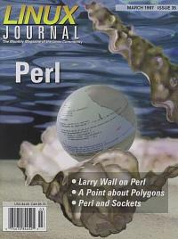

Shutdown Archive web server
Search:
Linux Journal
Issue #35/March 1997

Features
Creating and Using a Database with Perl
by Randy Scott
There are a variety of different database formats in a UNIX environment available to the Perl programmer.
Perl and Sockets
by Mike Mull
Learn about Perl's ability to use sockets, a mechanism of interprocess communication and the basis for most Internet clients and servers.
Wherefore Art, Thou?
by Larry Wall
The discourse on the art of Perl programming, originally printed in The Perl Journal .
News & Articles
AMD—AutoMount Daemon
by Matthew Crosby
Using the 12C Bus with Linux
by Simon G. Vogl
The Death of Xenix
by Evan Leibovitch
The Guide to Virtual Services
by Chad Robinson
NEdit
by Dan Wilder
Setting Up UUCP
by James L Hill
Reviews
Product Review
Metro-X and Accelerated-X
by Jonathan Gross
Book Review
Programming Perl
by Phil Hughes
Book Review
Perl 5 by Example
by Sid Wentworth
WWWsmith
Writing Man Pages in HTML
by Michael Hamilton
A Point About Polygons
by Bob Stein
At the Forge
Using the httpd error log to debug CGI
by Reuven Lerner
Columns
Letters to the Editor
Linux Means Business
Linux Means Business for the City of Garden Grove, CA
by Pyng Chang and Charles Kalil
New Products
Linux Gazette
Using the TCSH Shell
by Jasper K Pedersen
Best of Technical Support
by Gena Shurtleff
Archive Index
Shutdown Archive web server
Search:
Copyright © 1994 - 2018
Linux Journal
. All rights reserved.